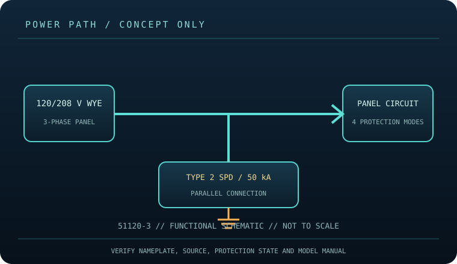

[ SURGE PROTECTIVE DEVICE // STATIC REFERENCE ]
Leviton 51120-3 Branch Panel SPD
Hardwired Type 2 SPD for 120/208 V three-phase Wye, 50 kA per mode/per phase; no receptacles, electrician-installed. This record describes the named model only; verify nameplate, region, revision, approvals and current manufacturer instructions before deployment.

SAFETY SCOPE: Surge protective devices do not provide outage runtime, guarantee protection from every event, repair defective grounding, or replace qualified electrical installation. Capacity and topology below are based on the cited product literature; where a value is not published, it is not guessed.
Model specifications and topology
| Manufacturer / exact model | Leviton 51120-3 — named North American model; revisions and region-specific suffixes must be checked on the actual label. |
|---|---|
| Class / topology | UL 1449 Type 2 branch-panel SPD connected in parallel, four protection modes (L-L, L-N, N-G and L-G per product documentation) on a 120/208 V three-phase Wye system. LED status indication; no battery or load outlets. |
| Electrical capacity | 120/208 V AC, three-phase Wye service. Leviton lists 50 kA maximum surge-current rating per mode/per phase. Enclosure is NEMA 1 for indoor branch-panel application; match the panel and system grounding exactly. |
| Surge rating | This is a hardwired branch-panel surge protective device, not a plug strip. The 50 kA figure is the published surge-current rating per mode/per phase, not a continuous load or a building service rating. No AC receptacle capacity is provided. |
| Outlets / connection interface | Hardwired line/neutral/ground conductors, no plug or receptacles. Leviton instructions specify connection through a 20 A breaker or fused disconnect and 12 AWG leads. NEMA 1 enclosure is for indoor use; retain access for inspection. |
| Compatibility | Only for the specified 120/208 V three-phase Wye configuration, panel/grounding arrangement, and installation method in the Leviton guide. Not a universal single-phase 120/240 V device. Confirm voltage, phase, breaker, conductor, enclosure and local code before installation. |
| Battery / runtime | No battery or stored-energy runtime. This product cannot ride through an outage; connected loads lose power when the source or device disconnects. |
| Monitoring / lifecycle | Use only the model’s labeled indicators, alarm, breaker or status display. These features are not proof of building-ground integrity; check manufacturer replacement/failure instructions. |
| Installation / revision control | Read the full model-specific manual and nameplate before installation. Match voltage, phase, current, connector, signal-line type, enclosure rating, revision and approvals; similar product-family names are not evidence of interchangeability. |
Compatibility and application
Only for the specified 120/208 V three-phase Wye configuration, panel/grounding arrangement, and installation method in the Leviton guide. Not a universal single-phase 120/240 V device. Confirm voltage, phase, breaker, conductor, enclosure and local code before installation.
UL 1449 Type 2 branch-panel SPD connected in parallel, four protection modes (L-L, L-N, N-G and L-G per product documentation) on a 120/208 V three-phase Wye system. LED status indication; no battery or load outlets.
Confirm the equipment input-voltage range, connector type, circuit capacity and signal path from both equipment manuals. A higher joule number does not increase the permissible connected load and does not, by itself, define clamping behavior or protection lifetime.
Safety, inspection and limits
- Installation and service are for a qualified electrician with the panel de-energized and verified safe under applicable procedures. This is mains-connected equipment: shock and arc-flash hazards can be fatal. Do not install, inspect internally or replace it while energized; follow Leviton instructions and local code.
- Read the status indicators on the device and follow the manufacturer’s replacement/service criteria. An indicator is not a substitute for qualified testing, a compatible grounding system, or routine inspection. Record model, panel, protection state and installation date.
- Surge protection reduces specified transient exposure but cannot guarantee equipment survival from lightning, wiring faults, sustained overvoltage or every conducted path. Follow the model manual and applicable electrical code.
Manufacturer sources and safety references
- Leviton — 51120-3 product pageManufacturer model page for voltage, phase, Type 2 classification, surge rating and enclosure.
- Leviton — Branch Panel SPD instruction sheet (PDF)Exact manufacturer installation and safety instructions for the 51120 series.
- NFPA — NFPA 70 (National Electrical Code)Panel installation must follow the locally adopted electrical code and qualified-person requirements.